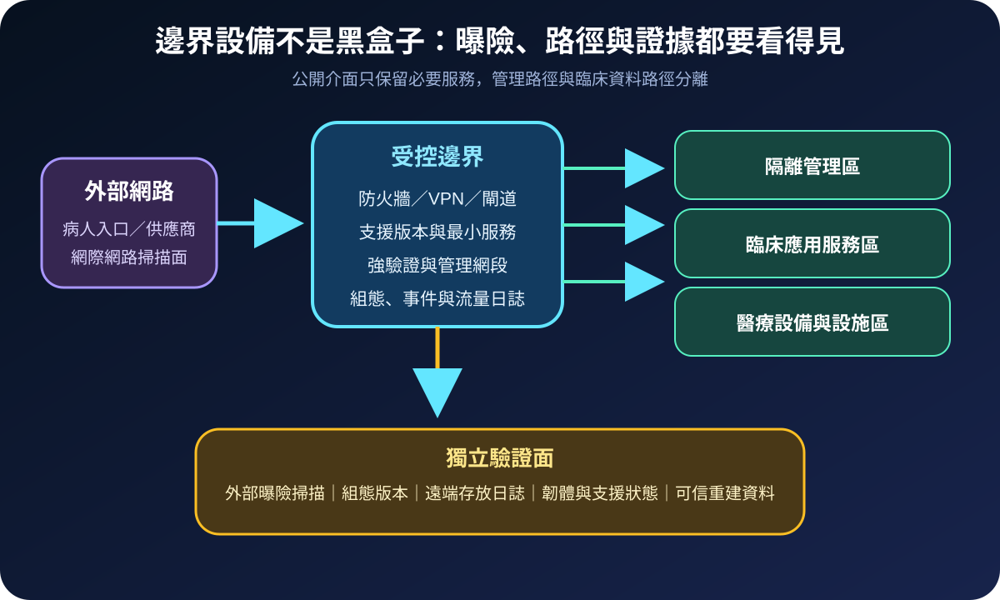
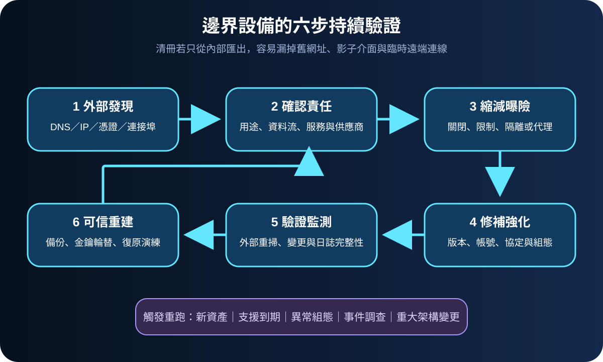
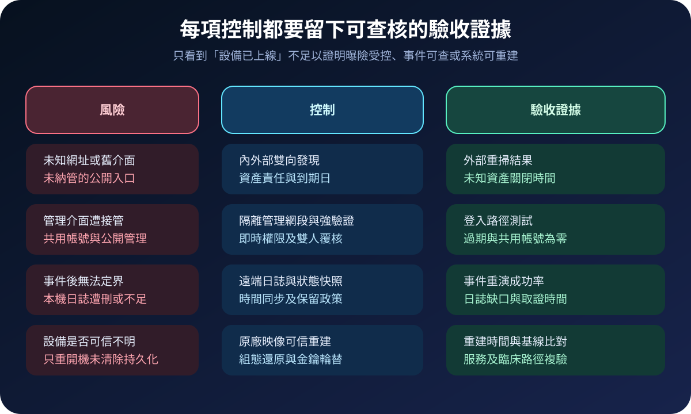

醫療資安國際觀察 · 2026-09-04
醫療邊界設備如何避免成為調查盲點：從外部曝險到可信重建
作者：Dr. William｜醫療資訊與資安治理實務工作者
防火牆、VPN、反向代理與遠端維運閘道位於醫療網路信任邊界；若資產未被發現、管理介面直接公開或設備無法保留調查證據，單一入口遭接管就可能同時影響防護、可見度與復原判定。
名詞解釋：邊界設備、曝險面與鑑識可觀測性
邊界設備負責連接外部與內部信任區域，常含防火牆、VPN、路由器、負載平衡器及安全閘道。外部曝險面是從網際網路可到達的網域、IP、憑證、連接埠與管理介面。鑑識可觀測性則是設備能提供可信的事件、組態、版本、記憶體或狀態資料，使事件團隊判定發生什麼事、影響到哪裡，以及設備是否仍可被信任。
國際現況與適用邊界
英國 NCSC 於 2026 年 8 月 27 日指出，全球多個產業的營運技術遭到增加的鎖定，部分活動造成有限度的實體運作干擾；未預期的公開曝險可能來自錯誤組態、舊連線或未管理資產。該機構要求組織建立確定的架構視圖、移除直接公開的設備、強化邊界、監測連線並維持可測試的復原資料。NCSC 於同年 7 月另指出，防火牆與 VPN 等設備常缺乏足夠鑑識能力，買方應將可靠日誌、狀態與受支援的證據擷取列入要求。NIST SP 800-61 Rev. 3 則把事件應變納入整體風險管理，要求準備、偵測、回應與復原活動持續改善。
法域與效力：NCSC 警示是英國官方風險資訊，NIST 文件是美國風險管理指引，均不是台灣醫院的法定控制清單。台灣醫療機構可採用其資產發現、邊界強化及鑑識準備方法；實際要求仍須依本地法規、醫院政策、設備限制、採購契約與臨床風險核定。
規劃：先把服務、責任與證據綁在同一張清冊
範圍可先涵蓋對外診療服務、遠距連線、供應商維運與醫療設備閘道。每項資產應記錄業務用途、資料流、責任人、支援期限、管理路徑、可保留日誌及可信重建方式。角色至少包含網路、資安、系統、臨床工程、服務負責人、採購及事件應變團隊。驗收指標可採未知曝險關閉時間、公開管理介面數、受支援設備比例、遠端日誌完整率、事件定界時間、組態還原成功率與重建後臨床複驗時間。

實作：從外部發現一路驗證到重建
- 建立外部視角：持續盤點網域、IP、憑證、連接埠與登入頁，和組態管理資料庫交叉比對，未知項目立即指定責任與期限。
- 縮減公開面：關閉非必要服務；管理介面移入隔離網段，遠端人員透過受控入口、強驗證與最小權限存取。
- 管理生命週期：追蹤版本、弱點、支援與汰換日期；不能立即更新時，以存取限制、監測、例外核准及退場期限管理。
- 外送可信證據：將管理登入、組態變更、流量摘要與安全事件即時送至權限分離的儲存位置，驗證時間同步、欄位及保留期。
- 演練失去信任：預先取得原廠映像、離線組態與授權資料，演練隔離、證據擷取、金鑰輪替、可信重建及臨床服務複驗。
風險：修補完成不等於設備仍可信
只依內部清冊可能漏掉舊 DNS、臨時 VPN 與供應商設備；只修補單一漏洞，也可能忽略遭竄改組態、持久化或外洩憑證。本機日誌若可被同一管理者刪除，事件發生後難以定界；直接恢復既有組態又可能把弱點帶回。處置需保留原始證據、比較可信基線、輪替相關秘密，並以外部重掃及臨床資料流測試確認關閉。

可執行清單
- 外部掃描結果是否能逐項對上資產、責任人與服務用途？
- 邊界設備管理介面是否與網際網路及一般辦公網路隔離？
- 設備是否在支援期內，並有弱點、例外與退場期限？
- 登入、組態及安全事件是否外送至權限分離的儲存位置？
- 事件團隊能否在不依賴未受信任設備下取得必要證據？
- 是否演練過原廠映像重建、金鑰輪替及臨床路徑複驗？
來源
- UK NCSC｜Disruptive cyber activity highlights risk from internet-exposed systems and edge devices（發布：2026-08-27；查閱：2026-09-04）
- UK NCSC｜Making forensic observability the norm for network devices（發布：2026-07-29；查閱：2026-09-04）
- NIST｜SP 800-61 Rev. 3, Incident Response Recommendations and Considerations for Cybersecurity Risk Management（發布：2025-04；查閱：2026-09-04）
內容說明
本文依健康台灣深耕計畫相關治理內容整理，並參考 NCSC 與 NIST 公開資料，提出台灣醫療機構可採用的邊界設備曝險管理、鑑識準備與可信重建框架；不取代主管機關公告、法律意見、原廠安全通知、設備認證或個案臨床決策。